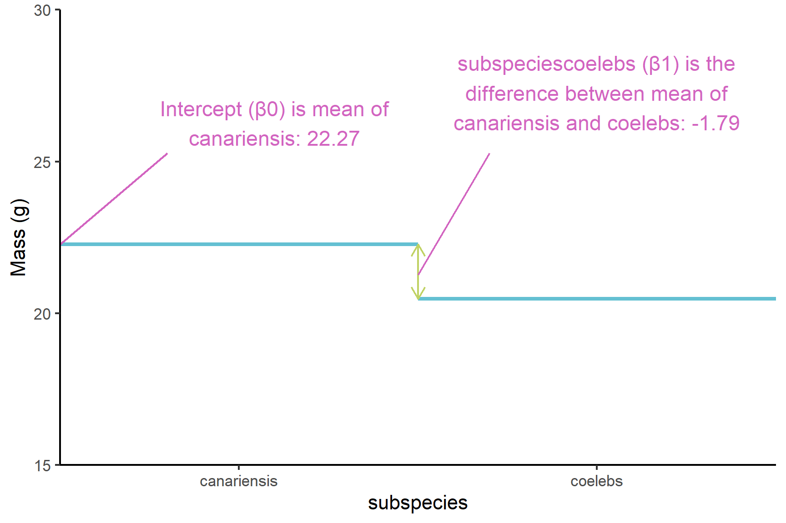
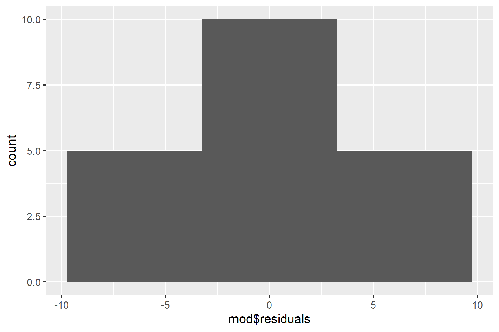

chaff <- read_table("data-raw/chaff.txt")13 Two-Sample tests
Warning
You are reading a work in progress. This page is a first draft but should be readable.
13.1 Overview
In the last chapter learned how to about single linear regression, a technique used when the explanatory variable is continuous. We now turn our attention to cases where our explanatory variable is categorical and has two groups. For example, we might want to know if there is a difference in mass between two subspecies of chaffinch, or if marks in two subjects are the same.
We use lm() or wilcox.test() to carry out a two-sample test depending on whether the assumptions of lm() are met. The general linear models applied with lm() are based on the normal distribution and known as parametric tests because they use the parameters of the normal distribution (the mean and standard deviation) to determine if an effect is significant. Null hypotheses are about a mean or difference between means. The assumptions need to be met for the p-values generated to be accurate.
If the assumptions are not met, we can use alternatives known as non-parametric tests. Non-parametric tests are based on the ranks of values rather than the actual values themselves. Null hypotheses are about the mean rank rather than he mean. These tests have fewer assumptions and can be used in more situations but the downside is they tend to be less powerful. This means they are less able to detect a difference where one exists.
13.1.1 Independent samples and paired samples.
An important consideration in conducting tests is whether the values in one groups are independent of the values in another group. Non-independence occurs when the two measures are linked. They could be the same individual, the same time time or the same location. For example, if we want to evaluate a treatment for high blood pressure we might measure blood pressure before and after the treatment on the same individuals. The key consideration is whether pairs of observations in different groups have something in common that make them more similar to each other than to other observations.
13.1.2 T-tests
A linear model with one explanatory variable with two groups is also known as a two-sample t-test when the samples are independent and as a paired-samples t-test when they are not. R has a t.test() function which allows you to fit a linear model with just two groups. We teach you to use and interpret lm() because it is more generalisable - you will be able to use it when you have three or more groups or additional explanatory variables. The output of lm() is also in the same form as many other statistical functions in R so being familiar with it will help you learn other methods and functions more easily. However, it is definitely not wrong to use t.test() rather than lm() for two-group situations - the p-values will be identical.
13.1.3 Model assumptions
The assumptions of the general linear model are that the residuals are normally distributed and have homogeneity of variance. A residual is the difference between the predicted and observed value.
If we have a continuous response and a categorical explanatory variable with two groups, we usually apply the general linear model with lm() and then check the assumptions, however, we can sometimes tell when a non-parametric test would be more appropriate before that:
- Use common sense - the response should be continuous (or nearly continuous, see Ideas about data: Theory and practice). Consider whether you would expect the response to be continuous
- There should decimal places and few repeated values.
To examine the assumptions after fitting the linear model, we plot the residuals and test them against the normal distribution
13.1.4 Reporting
In reporting the result of two-sample test we give:
the significance of effect - whether there is there a difference between the groups
- parametric: whether there is there a difference between the groups means
- non-parametric: whether there is there a difference between the group medians
the direction of effect - which of the means/medians is greater
the magnitude of effect -
- parametric: the means and standard errors for each group or the mean difference for paired samples
- non-parametric: the medians for each group or the median difference for paired samples
Figures should reflect what you have said in the statements. Ideally they should show both the raw data and the statistical model:
- parametric: means and standard errors
- non-parametric: boxplots with medians and interquartile range
We will explore all of these ideas with some examples.
13.2 üé¨ Your turn!
If you want to code along you will need to start a new RStudio project then a new script.
13.3 Two independent samples example parametric
A number of subspecies of the common chaffinch have been described, based principally on the differences in the pattern and colour of the adult male plumage. Two of groups of these subspecies are:
- “coelebs group” that occurs in Europe and Asia
- “canariensis group” that occurs on the Canary Islands
The data in chaff.txt give the masses of twenty individuals from each subspecies. We want to know if the subspecies differ in mass. These groups are independent - there is no link between values in one group and any value in the other group.
13.3.1 Import and explore
Import the data:
| subspecies | mass |
|---|---|
| coelebs | 18.3 |
| coelebs | 22.1 |
| coelebs | 22.4 |
| coelebs | 18.5 |
| coelebs | 22.2 |
| coelebs | 19.3 |
| coelebs | 17.8 |
| coelebs | 20.2 |
| coelebs | 22.1 |
| coelebs | 16.6 |
| coelebs | 20.7 |
| coelebs | 18.7 |
| coelebs | 22.6 |
| coelebs | 21.5 |
| coelebs | 21.7 |
| coelebs | 19.9 |
| coelebs | 23.1 |
| coelebs | 17.8 |
| coelebs | 19.5 |
| coelebs | 24.6 |
| canariensis | 22.7 |
| canariensis | 20.6 |
| canariensis | 25.4 |
| canariensis | 20.4 |
| canariensis | 21.6 |
| canariensis | 17.0 |
| canariensis | 26.4 |
| canariensis | 20.4 |
| canariensis | 24.7 |
| canariensis | 21.8 |
| canariensis | 23.4 |
| canariensis | 24.4 |
| canariensis | 21.0 |
| canariensis | 23.4 |
| canariensis | 20.5 |
| canariensis | 21.4 |
| canariensis | 21.5 |
| canariensis | 23.7 |
| canariensis | 23.4 |
| canariensis | 21.8 |
These data are in tidy format (Wickham 2014) - all the mass values are in one column with another column indicating the subspecies. This means they are well formatted for analysis and plotting.
In the first instance it is sensible to create a rough plot of our data. This is to give us an overview and help identify if there are any issues like missing or extreme values. It also gives us idea what we are expecting from the analysis which will make it easier for us to identify if we make some mistake in applying that analysis.
Violin plots(geom_violin()), box plots (geom_boxplot()) or scatter plots (geom_point()) all make good choices for exploratory plotting and it does not matter which of these you choose.
ggplot(data = chaff,
aes(x = subspecies, y = mass)) +
geom_boxplot()
R will order the groups alphabetically by default.
The figure suggests that the canariensis group is heavier than the coelebs group.
Summarising the data for each subspecies group is the next sensible step. The most useful summary statistics are the means, standard deviations, sample sizes and standard errors. I recommend the the group_by() and summarise() approach:
chaff_summary <- chaff |>
group_by(subspecies) |>
summarise(mean = mean(mass),
std = sd(mass),
n = length(mass),
se = std/sqrt(n))We have save the results to chaff_summary so that we can use the means and standard errors in our plot later.
chaff_summary
## # A tibble: 2 × 5
## subspecies mean std n se
## <chr> <dbl> <dbl> <int> <dbl>
## 1 canariensis 22.3 2.15 20 0.481
## 2 coelebs 20.5 2.14 20 0.47813.3.2 Apply lm()
We can create a two-sample model like this:
mod <- lm(data = chaff, mass ~ subspecies)And examine the model with:
summary(mod)
##
## Call:
## lm(formula = mass ~ subspecies, data = chaff)
##
## Residuals:
## Min 1Q Median 3Q Max
## -5.2750 -1.7000 -0.3775 1.6200 4.1250
##
## Coefficients:
## Estimate Std. Error t value Pr(>|t|)
## (Intercept) 22.2750 0.4795 46.456 <2e-16 ***
## subspeciescoelebs -1.7950 0.6781 -2.647 0.0118 *
## ---
## Signif. codes: 0 '***' 0.001 '**' 0.01 '*' 0.05 '.' 0.1 ' ' 1
##
## Residual standard error: 2.144 on 38 degrees of freedom
## Multiple R-squared: 0.1557, Adjusted R-squared: 0.1335
## F-statistic: 7.007 on 1 and 38 DF, p-value: 0.01175The Estimates in the Coefficients table give:
(Intercept)which is the mean of the canariensis group (Figure 13.1). Just as the intercept is the value of the y (the response) when the value of x (the explanatory) is zero in a simple linear regression, this is the value ofmasswhen thesubspeciesis at its first level. The order of the levels is alphabetical by default.subspeciescoelebsis what needs to be added to the mean of the canariensis group to get the mean of the coelebs group (Figure 13.1). Just as the slope is amount of y you add for each unit of x in a simple linear regression, this is the amount ofmassthat needs to be added when thesubspeciesgoes from its first level to its second level (i.e., one unit).subspeciescoelebsis negative so the the coelebs group mean is lower than the canariensis group mean
The p-values on each line are tests of whether that coefficient is different from zero. Thus it is:
subspeciescoelebs -1.7950 0.6781 -2.647 0.0118 *
that tells us the difference between the means is significant.
The F value and p-value in the last line are a test of whether the model as a whole explains a significant amount of variation in the response variable. For a two-sample test, just like a regression, this is exactly equivalent to the test of the slope against zero and the two p-values will be the same.

13.3.3 Check assumptions
Check the assumptions: All t-tests assume the “residuals” are normally distributed and have homogeneity of variance.
First use common sense: mass is a continuous and we would expect it to be normally distributed thus we would expect the residuals to be normally distributed
Second by plotting residuals:
plot(mod, which = 1)
ggplot(mapping = aes(x = mod$residuals)) +
geom_histogram(bins = 10)
shapiro.test(mod$residuals)
##
## Shapiro-Wilk normality test
##
## data: mod$residuals
## W = 0.98046, p-value = 0.7067Checking the assumptions: normally distributed residuals
- Variance is about the same for all values of x
- Looks roughly normal, symmetrical
- test with shapiro. is NS. note that not significant means not significantly different from a normal distribution. It does not mean definitely normally distributed
13.3.4 Report
Canariensis chaffinches (\(\bar{x} \pm s.e: 22.48 \pm 0.48\)) are significantly heavier than Coelebs (\(20.28 \pm 0.48\) ) (t = 2.65; d.f. = 38; p = 0.012). See Figure 13.2.
ggplot() +
geom_point(data = chaff, aes(x = subspecies, y = mass),
position = position_jitter(width = 0.1, height = 0),
colour = "gray50") +
geom_errorbar(data = chaff_summary,
aes(x = subspecies, ymin = mean - se, ymax = mean + se),
width = 0.3) +
geom_errorbar(data = chaff_summary,
aes(x = subspecies, ymin = mean, ymax = mean),
width = 0.2) +
scale_y_continuous(name = "Mass (g)",
limits = c(0, 30),
expand = c(0, 0)) +
scale_x_discrete(name = "Subspecies",
labels = c("Canariensis", "Coelebs")) +
annotate("segment", x = 1, xend = 2,
y = 28, yend = 28,
colour = "black") +
annotate("text", x = 1.5, y = 29,
label = expression(italic(p)~"= 0.012")) +
theme_classic()
13.4 Two independent samples example non-parametric
The two sample Wilcoxon, also known as the Mann-Whitney, is the non-parametric equivalent of the linear model with two independent samples. The general question you have about your data - are these two groups different - is the same, but one of more of the following is true:
- the response variable is not continuous
- the residuals are not normally distributed
- the sample size is too small to tell if they are normally distributed.
The data in arabidopsis.txt give the number of leaves on eight wildtype and eight mutant Arabidopsis plants. We want to know if the two types of plants have differing numbers of leaves. These are counts so are not continuous and the sample sizes are quite small. A non-parametric test is a safer option.
13.4.1 Import and explore
arabidopsis <- read_table("data-raw/arabidopsis.txt")Create a quick plot of the data:
ggplot(data = arabidopsis,
aes(x = type, y = leaves)) +
geom_boxplot()
Summarising the data using the median and interquartile range is more aligned to the type of data and the type of analysis than using means and standard deviations:
arabidopsis_summary <- arabidopsis |>
group_by(type) |>
summarise(median = median(leaves),
interquartile = IQR(leaves),
n = length(leaves))View the results:
arabidopsis_summary
## # A tibble: 2 × 4
## type median interquartile n
## <chr> <dbl> <dbl> <int>
## 1 mutant 5 2.5 8
## 2 wild 8.5 1.5 813.4.2 Apply wilcox.test()
The way we pass the dataframe and variables to wilcox.test() is just the same as for lm(). We give the data argument and a “formula” which says leaves ~ type meaning “explain leaves by type”.
wilcox.test(data = arabidopsis, leaves ~ type)
##
## Wilcoxon rank sum test with continuity correction
##
## data: leaves by type
## W = 5, p-value = 0.005051
## alternative hypothesis: true location shift is not equal to 0The warning message “Warning: cannot compute exact p-value with ties” is not something to worry about too much. It is a warning rather than an indication that your results are incorrect. It means the p -value is based on an approximation rather than being exact because there are ties (some values are the same).
The result of the test is given on this line: W = 5, p-value = 0.005051. W is the test statistic. The p-value is less than 0.05 meaning there is a significant difference in the number of leaves on wildtype and mutant plants.
13.4.3 Report
There are significantly more leaves on wildtype (median = 8.5) than mutant (median = 5) plants (Wilcoxon rank sum test: W = 5, \(n_1\) = 8, \(n_2\) = 8, p = 0.005). See Figure 13.3.
ggplot(data = arabidopsis,
aes(x = type, y = leaves)) +
geom_boxplot() +
scale_y_continuous(name = "Number of leaves",
limits = c(0, 12),
expand = c(0, 0)) +
scale_x_discrete(name = "",
labels = c("Mutatnt", "Wildtype")) +
annotate("segment", x = 1, xend = 2,
y = 10.5, yend = 10.5,
colour = "black") +
annotate("text", x = 1.5, y = 11,
label = expression(italic(p)~"= 0.005")) +
theme_classic()
13.5 Two paired samples example parametric
The data in marks.csv give the marks for ten students in two subjects: Data Analysis and Biology. These data are paired because we have two marks from one student so that a mark in one group has a closer relationship with one of the marks in the other group than with any of the the other. We want to know if students to equally well in both subjects.
13.5.1 Import and explore
Import the data:
marks <- read_csv("data-raw/marks.csv")Since these data are paired, it makes sense to highlight how the marks differ for each student. One way of doing that is to draw a line linking their marks in each subject. This is known as a spaghetti plot. We can use two geoms: geom_point() and geom_line(). We join a student’s marks we need to set the group aesthetic to student.1
ggplot(data = marks, aes(x = subject, y = mark)) +
geom_point() +
geom_line(aes(group = student))
A paired test requires us to test whether the difference in marks between the two subjects is zero on average. One handy way to achieve this is to organise our groups into two columns. The pivot_wider() function will do this for us. We need to tell it what column gives the identifiers (i.e., matches the the pairs) - the student number in this case. We also need to say which variable contains what will become the column names and which contains the values.
Pivot the data so there is a column for each subject:
marks_wide <- marks |>
pivot_wider(id_cols = student,
names_from = subject,
values_from = mark)We can summarise the difference between subject, DataAnalysis - Biology as follows:
marks_wide |>
summarise(mean_diff = mean(DataAnalysis - Biology),
sd_diff = sd(DataAnalysis - Biology),
n_diff = length(DataAnalysis - Biology),
se_diff = sd_diff/sqrt(n_diff))
## # A tibble: 1 × 4
## mean_diff sd_diff n_diff se_diff
## <dbl> <dbl> <int> <dbl>
## 1 7 8.96 10 2.83The mean difference is positive meaning students have higher marks on Data Analysis on average.
13.5.2 Apply lm()
We can create a paired-sample model with the lm() function2 like this:
mod <- lm(data = marks_wide, DataAnalysis - Biology ~ 1)The response here is the differences DataAnalysis - Biology and the ~ 1 indicates we only have one group so we are only interested in testing a single mean against a value of zero. Another way of saying this is we have an “intercept only model” meaning were are estimating only β0 - there is no β1.
summary(mod)
##
## Call:
## lm(formula = DataAnalysis - Biology ~ 1, data = marks_wide)
##
## Residuals:
## Min 1Q Median 3Q Max
## -13.00 -7.75 1.50 5.75 11.00
##
## Coefficients:
## Estimate Std. Error t value Pr(>|t|)
## (Intercept) 7.000 2.832 2.471 0.0355 *
## ---
## Signif. codes: 0 '***' 0.001 '**' 0.01 '*' 0.05 '.' 0.1 ' ' 1
##
## Residual standard error: 8.957 on 9 degrees of freedomThe Estimates in the Coefficients table gives the (Intercept) which is the mean of DataAnalysis - Biology. The average difference between subjects is 7.0 marks. The p-value of 0.0355 means 7.0 does differ signifcantly from zero.
13.5.3 Check assumptions
We might expect marks, and thus the difference between marks to be normally distributed. However, this is a small sample and choosing a non-parametric test instead would be sensible. We will continue with this example to demonstrate how to interpret and report on the result in this simple case.
We do not need to plot the residuals against the fitted values (plot(mod, which = 1)) for a paired test. The purpose of a residuals vs fitted plot is to check the variance is to check that variance is the same for all fitted values. For a paired test, we only have one fitted value, the mean difference.
The normality of the residuals should be checked.
ggplot(mapping = aes(x = mod$residuals)) +
geom_histogram(bins = 4)
We only have 10 values so the distribution is never going to look smooth. We can’t draw strong conclusions from this but we do at least have a peak at 0. Similarly a normality test is likely to be non-significant because of the sample size so a non-significant result is not strong evidence of the residuals following a normal distribution:
shapiro.test(mod$residuals)
##
## Shapiro-Wilk normality test
##
## data: mod$residuals
## W = 0.90358, p-value = 0.239813.5.4 Report
Individual students score significantly higher in Data Analysis than in Biology (t = 2.47; d.f. = 9; p = 0.0355) with an average difference of 6.5%. See Figure 13.4
ggplot(data = marks, aes(x = subject, y = mark)) +
geom_point() +
geom_line(aes(group = student), linetype = 3) +
scale_x_discrete(name = "") +
scale_y_continuous(name = "Mark",
expand = c(0, 0),
limits = c(0, 110)) +
annotate("segment", x = 1, xend = 2,
y = 105, yend = 105,
colour = "black") +
annotate("text", x = 1.5, y = 108,
label = expression(italic(p)~"= 0.0355")) +
theme_classic()
13.6 Two paired samples example non-parametric
13.6.1 Apply wilcox.test()
To apply a paired test with wilcox.test() we need to use the long format data (tidy) and add the paired = TRUE argument.
wilcox.test(data = marks, mark ~ subject, paired = TRUE)
##
## Wilcoxon signed rank test with continuity correction
##
## data: mark by subject
## V = 6.5, p-value = 0.03641
## alternative hypothesis: true location shift is not equal to 013.6.2 Report
Individual students score significantly higher in Data Analysis than in Biology (Wilcoxon signed rank test: V = 6.55; \(n\) = 10; p = 0.036). See@fig-marks
13.7 Summary
You might like to try removing
aes(group = student)to see what ggplot does when the lines are not grouped by student.↩︎This is not the only way to apply a paired test. When there are only two groups and no other explanatory variables we can use
t.test(data = marks, mark ~ subject, paired = TRUE). A more general method which works when you have two or more non-independent values (e.g., more than two subjects) or additional explanatory variables, is to create a “linear mixed model” withlmer()↩︎